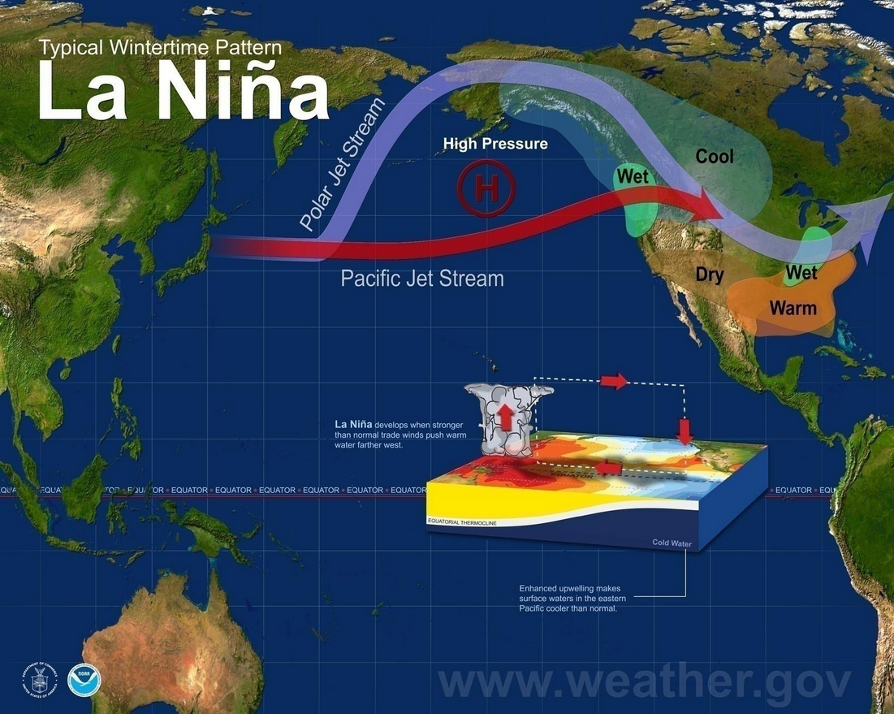

Causes of Climate Change
- Long-term shifts in temperatures & weather patterns.
- Such shifts can be natural but has been primarily driven by human activities since 1800s.
- Greenhouse gases emissions lead to climate change.
Extreme Weather
Extreme weather refers to weather events that are significantly different from the average weather pattern for an area. These events can be disruptive and even deadly, affecting human communities, agriculture, and ecosystems. There are two main types of extreme weather:
- Weather-related events: These are shorter incidents like tornadoes, deep freezes, or heat waves.
- Climate-related events: These last longer or are caused by a buildup of weather-related events over time. Examples include droughts caused by long dry spells or wildfires caused by an extended drought.
During La Niña events, trade winds are even stronger than usual, pushing more warm water toward Asia. Off the west coast of the Americas, upwelling increases, bringing cold, nutrient-rich water to the surface. These cold waters in the Pacific push the jet stream northward. This tends to lead to drought in the southern U.S. and heavy rains and flooding in the Pacific Northwest and Canada. During a La Niña year, winter temperatures are warmer than normal in the South and cooler than normal in the North.

La Niña
Checkout which kind of extreme weathers you already knew right below:
Extreme Weather